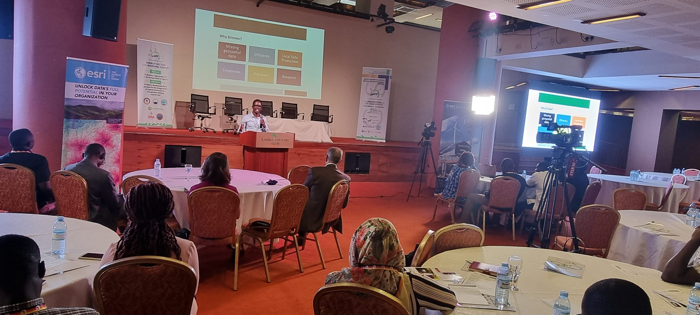

Precision
We measure our success in millimeters. From geodetic control networks to drone LiDAR point clouds, we deliver data that engineers trust without hesitation.
 TrimbleGNSS · Total Stations · Scanning
TrimbleGNSS · Total Stations · Scanning DJI EnterpriseDrones · LiDAR · Dock
DJI EnterpriseDrones · LiDAR · Dock Esri ArcGISGIS & SDI
Esri ArcGISGIS & SDI Spectra GeospatialGNSS & Robotic Stations
Spectra GeospatialGNSS & Robotic Stations Nikon PrecisionOptical Survey
Nikon PrecisionOptical Survey US RadarGround Penetrating Radar
US RadarGround Penetrating Radar Seafloor SystemsHydrographic Survey
Seafloor SystemsHydrographic Survey IBM Tape StorageEnterprise Data Archive
IBM Tape StorageEnterprise Data Archive XGRIDSHandheld SLAM LiDAR
XGRIDSHandheld SLAM LiDAR
Fifteen years of multidisciplinary IT and Geospatial Science leadership, empowering governments, engineers, and enterprises across East Africa with world-class positioning hardware, analytics, and certified lifecycle support.

KACO Systems was founded in Kampala in 2011 with a singular objective: to elevate the standard of spatial data collection, engineering survey, and information technology infrastructure across Uganda and East Africa.
Over the past fifteen years, we have grown into Uganda's foremost geospatial authority — serving as an Authorised Distribution Partner for Trimble Geospatial, an Esri Silver Partner, and an enterprise specialist for DJI Enterprise drones. We bridge advanced global positioning technology with the practical realities of African infrastructure delivery.

We believe in long-term relationships backed by unwavering technical integrity and transparent engineering standards.
We measure our success in millimeters. From geodetic control networks to drone LiDAR point clouds, we deliver data that engineers trust without hesitation.
Doing what is right for our clients, our team, and our partner brands. Transparent pricing, genuine OEM parts, and honest technical feasibility assessments.
We invest heavily in factory training and local laboratory calibration facilities so that our clients never have to ship instruments overseas for routine service.
We walk beside our clients throughout the working life of their systems — from initial selection and financing advice to ongoing HelpDesk field support and certified training.
Our team comprises registered geodesists, commercial UAV pilots, certified GIS architects, and factory-trained instrument technicians.
Specializing in primary geodetic control networks, CORS base stations, cadastral land parcel demarcation, highway linear corridor stakeout, and highwall deformation monitoring.
Operating a fleet of DJI Enterprise commercial drones equipped with aerial LiDAR and multispectral cameras to execute large-area photogrammetry, quarry volumetrics, and forestry analysis.
Architecting enterprise GIS databases, web mapping portals, and automated mobile data collection workflows for national ministries, UN agencies, and utility networks.
Maintaining optical collimator test benches and EDM baselines in Kampala to service and certify surveying instruments, coupled with blended practical training masterclasses.